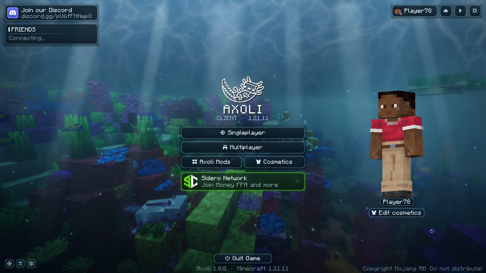
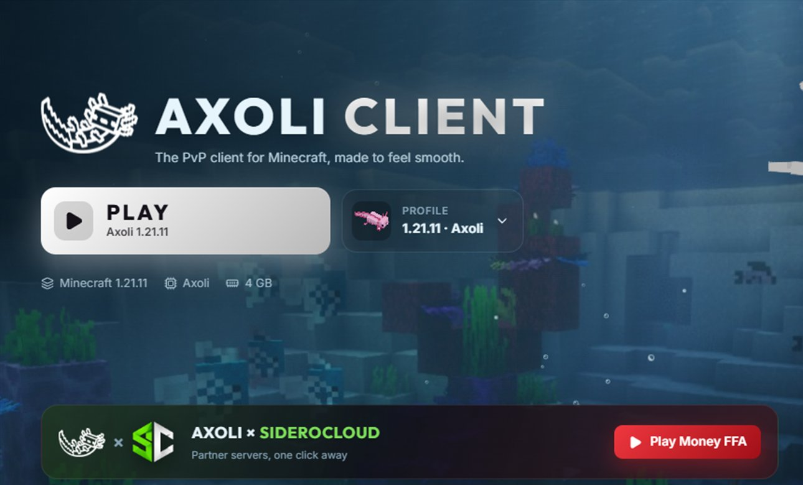

AXOLICLIENT
The PvP client for Minecraft, made to feel smooth. A movable HUD, PvP tools, a minimap, replays and cosmetics, with its own launcher that sets it all up for you.

The main menu, in gameEverything you'd add yourself, already there
Axoli is a Fabric mod for Minecraft: Java Edition 1.21.11. It runs on the normal game files from Mojang and plays on ordinary multiplayer servers.
A HUD you place yourself
FPS, CPS, armour, potions, keystrokes and more in one glass style. Drag them where you want; they snap to the edges and to each other.
PvP tools
Combat hitboxes, a crosshair and swing cooldown bar you paint pixel by pixel, and a saturation outline traced from your own pack.
More FPS
Optimization mods like ImmediatelyFast, FerriteCore and ModernFix built in, mobs behind walls skipped, and borderless fullscreen on F11.
Minimap and world map
Shaded hills, deep water and caves, waypoints with beacon beams, and a fair-play switch for servers that limit map mods.
Replays and clips
Watch a fight back from any angle, save clips of your best moments, and hide names and servers with streamer mode.
Cosmetics and friends
Capes, wings, hats, pets, shields and effects that other Axoli players see, plus a friends list with who's online.

The Axoli LauncherOne click from desktop to game
The Axoli Launcher is a Windows app that does what the official Minecraft Launcher does, with Axoli built in.
- Play. Downloads Minecraft, the Java it needs, Fabric, Fabric API and Axoli from their official sources, then starts the game.
- Profiles. Each one is its own install with its own version, mods, worlds and settings. Bring one over from Lunar, Feather, Prism and more, or share yours with a code.
- Mods. Search Modrinth and install mods with one click, or add your own.
- Skins and cosmetics. Keep a skin library, switch your cape, and try cosmetics on a 3D player.
- Updates itself. When a new version is out, it downloads and installs it with one click.
Download the launcher
Free for anyone who owns Minecraft: Java Edition. Windows 10 and 11 only for now.
Run the installer
Open AxoliLauncher-Setup.exe. It installs in a few seconds and starts the launcher.
Sign in with Microsoft
Use the Microsoft account that owns Minecraft: Java Edition, on Microsoft's own sign-in page.
Press Play
The launcher downloads the game and Axoli the first time, then you're in.
How Microsoft sign-in works
The launcher signs in the same way the official launcher does. It uses its own Microsoft (Azure) app registration, set up for personal Microsoft accounts, with the standard Xbox Live and Minecraft services. It requests only the XboxLive.signin and offline_access permissions.
- When you choose Add account, the launcher opens Microsoft's own sign-in page (
login.microsoftonline.com) in a separate, sandboxed window with a fresh, empty browser session. You type your email and password only on Microsoft's page. The launcher never sees, handles or stores your password. - Sign-in uses the OAuth 2.0 authorization code flow with PKCE and a random
statevalue. When Microsoft redirects back, the launcher reads the one-time code and closes the window. - The launcher exchanges that code with Microsoft for an access token and a refresh token.
- The Microsoft token is exchanged with Xbox Live (
user.auth.xboxlive.com), then XSTS (xsts.auth.xboxlive.com), and finally with Minecraft services (api.minecraftservices.com) for a Minecraft access token. - The launcher reads your Minecraft profile (username and UUID) to confirm that the account owns Minecraft: Java Edition, then starts the game with that token, like the official launcher.
If the account has no Xbox profile, isn't allowed on Xbox Live, or doesn't own the game, the launcher shows a clear message and stops.
How logins are stored, and what data is kept
On your computer
Accounts are saved in %APPDATA%\.axoli-launcher\accounts.json on your own PC. For each account it keeps:
| Item | How it is stored |
|---|---|
| Microsoft refresh token | Encrypted with Windows' Data Protection API (DPAPI, through Electron safeStorage), so only your Windows user account can decrypt it. |
| Minecraft access token and its expiry time | Encrypted the same way. It is reused until shortly before it expires, then renewed silently with the refresh token. |
| Minecraft username, UUID and Xbox user ID | Stored so the launcher can show the account and start the game. |
Your password is never stored anywhere. Tokens are only ever sent to Microsoft, Xbox Live and Mojang. They are never sent to Axoli's own servers. You can remove an account in the launcher at any time, which deletes its saved tokens. You can also revoke the launcher's access from your Microsoft account's privacy settings.
On the Axoli service
Friends and cosmetics are provided by the Axoli service. To prove who you are, the launcher and the mod use Mojang's standard server-join check (the same check every Minecraft server uses). The service asks Mojang whether you joined and never receives your Microsoft or Minecraft tokens. The service keeps:
- your Minecraft username and UUID, and when you were last seen;
- the cosmetics you picked, so other Axoli players can see them;
- your friends, friend requests and team membership;
- a location (server and position) only if you turn on location sharing, held in memory and shared only with your friends.
- the cosmetics you own, your Axoli coin balance and a log of coin changes (packs bought, cosmetics bought, refunds), and, if you link it, your Discord account's ID and name;
- profiles you share as a code, for 30 days or until you delete the code.
The game and launcher reach the service over an encrypted connection (https://api.axoliclient.com). That address runs through Cloudflare, which protects it from attacks and, like any network in between, sees your IP address and the time of each request. Your IP address is only used, in memory, to limit how fast one address can send requests. It is not stored (the one exception: a forged payment notification sent to the service is logged with the address it came from).
Buying Axoli coins
Coin packs are sold by Tebex, which is the merchant of record: Tebex handles the payment, your payment details, receipts, taxes, refunds and chargebacks under its own privacy policy. Axoli never sees your card or PayPal details. Axoli only receives your Minecraft username and UUID and which pack you bought, so it can add the coins to your account. Your IP address is passed to Tebex when you open a checkout from the game or launcher, for its fraud checks.
Axoli does not sell data, show ads or use the data for anything other than these features. To have your data on the Axoli service deleted, contact us (below).
Axoli is a free, independent project. It is not affiliated with or endorsed by Mojang Studios or Microsoft. It does not sell or unlock Minecraft: every player needs their own copy of Minecraft: Java Edition.
Questions, support or a data request?
Axoli Client and the Axoli Launcher are made by ColinJM. For questions, support, security reports or data deletion requests, join the Axoli Client Discord.